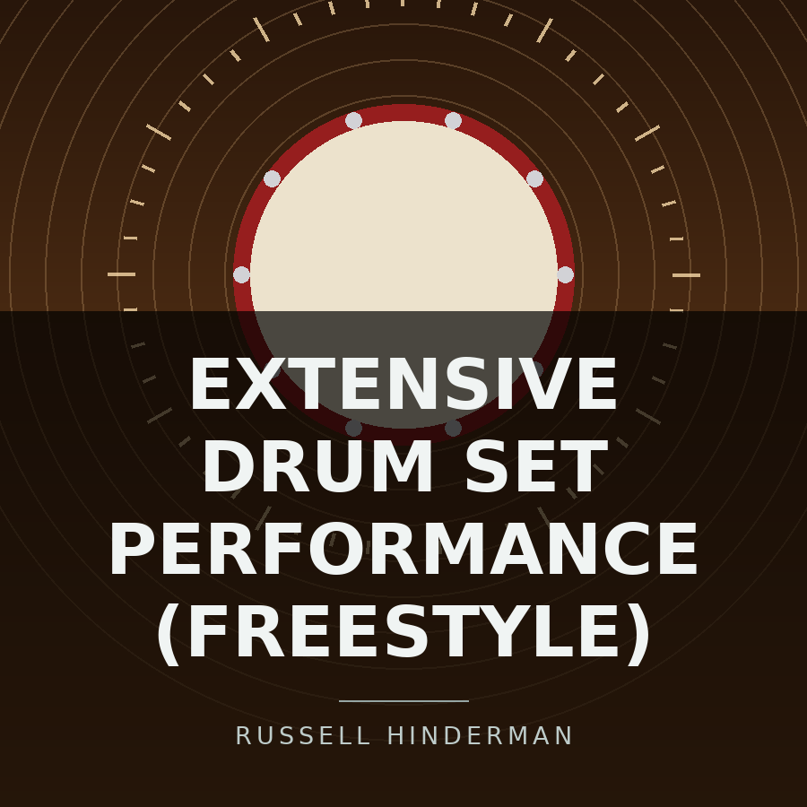

Back to all releases on the Music page
This is the release page for Extensive drum set performance with tempo changes and time signature changes at Cloverleaf high school (Freestyle). Below the cover art there are four sections, in this order: Release Details, Track Listing, Stream This Release, and Related Releases. After that comes a small navigation area with links to the previous and next releases by date and back to the Music page, followed by the page footer.

Release Details
- Artist
- Russell Hinderman
- Written by
- Russell Hinderman
- Format
- EP
- Genre
- Metal
- Release date
- March 25, 2026
- Label
- Breaking barriers records
- Tracks
- 1
- Running time
- 19 minutes 17 seconds
Extensive drum set performance with tempo changes and time signature changes at Cloverleaf high school (Freestyle) is a one-track EP released on March 25, 2026, running 19 minutes 17 seconds.
As the title says, it is a freestyle drum set performance at Cloverleaf high school, with tempo and time signature changes. At over 19 minutes it is the longest single track in the catalog.
Track Listing
| Number | Title | Length |
|---|---|---|
| 1 | Extensive drum set performance with tempo changes and time signature changes at Cloverleaf high school (Freestyle) | 19:17 |
Stream This Release
Related Releases
- Solo drum set performance at Cloverleaf high school, the other drum performance release.